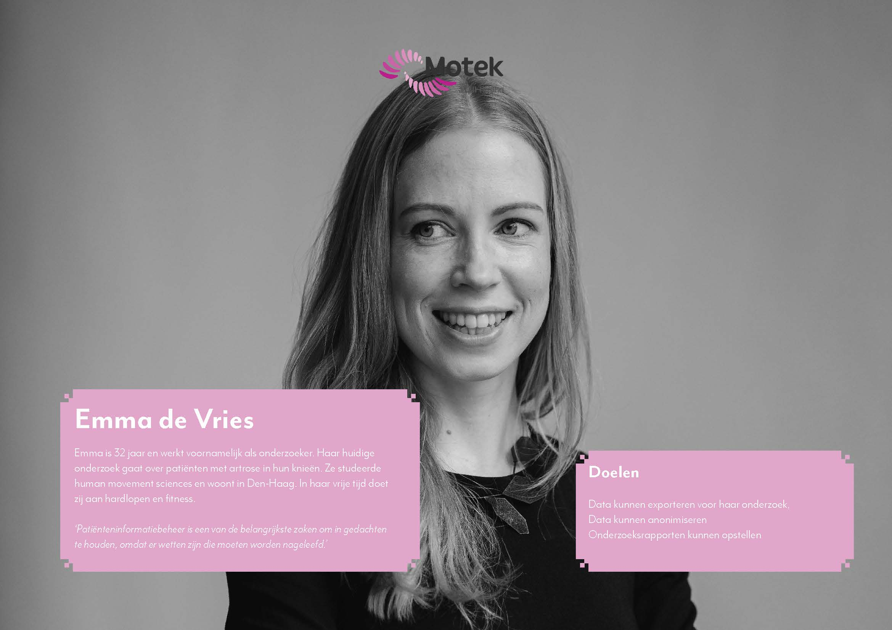
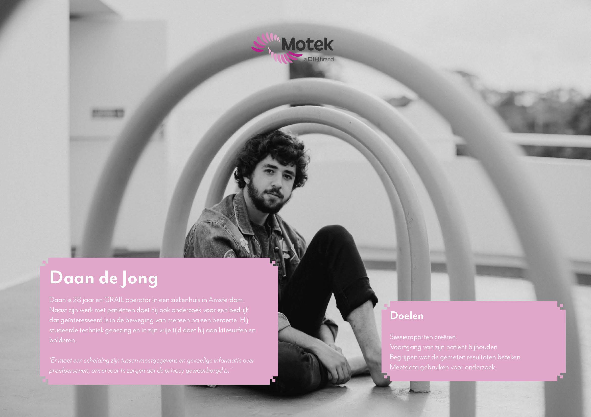

Portfolio/ Motek Medical b.v.
Motek Medical b.v. | 2019
Assignment
During my time at Motek Medical I worked on three projects in total, my main focus was the user interface for the GRAIl, M-Gait, and CAREN. These devices are used for medical research and phsyiotherapy. My assignment was to find out what users wanted and needed in a new version of the software. This required me to work with different stakeholders and perform multiple research methods before starting the proces of sketching and eventually designing and testing the new user interface.
User research
During my research of the users I used different methods to get insights and verify insights. To start of the research I interviewed seven users and created a list of insights, after which I created a customer journey and taks lists in order to see how they use the software now versus how they would like to interact woth the software to understand their mental model. After creating these, I verified the insights and asked new question to understand their motivation more with a questionnaire. After organizing the insights I created personas, a user requirement list, user stories, a new version of the flowchart and created sketches, and eventually interfaces for the managing software.
Personas
Note that the personas are in Dutch due to the fact that my Bachelor project was in Dutch.
 Design
After, and during, the user research I started sketching different concepts and based on the flowchart, the user requirements list, user stories, and the feedback I gathered during feedback sessions with the project manager, and the lead user experience designer. After sketching and several feedback sessions I started to create a clickable wireframe setup in Adobe Xd. I opted to create a clickable interface from the start, in order to find out if the flow from screen to screen was correct and would fit in the users mental model. After several feedback sessions I started the mockup with the corporate identity of Motek. I also had several feedback sessions with this mockup before I created a usability test and tested it on colleagues who interact with the users the most. Due to time restrictions the end users weren't available to test with. After conducting the usability test, and working out the feedback, we came to version 1.0 for the software.